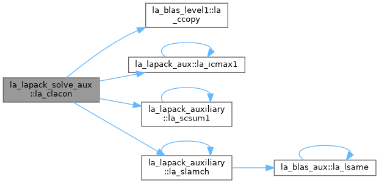
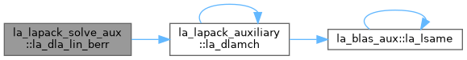
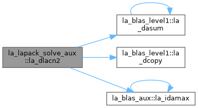
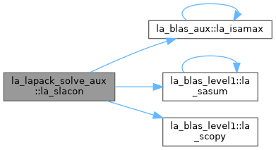
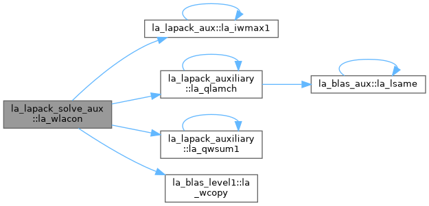
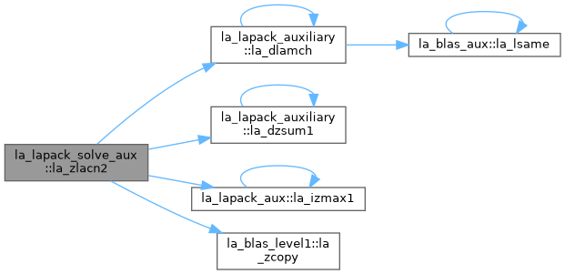

- Generated by
 1.13.2
1.13.2
|
fortran-lapack
|
Linear solve helpers: condition estimation, componentwise backward error. More...
Functions/Subroutines | |
| pure subroutine, public | la_slacn2 (n, v, x, isgn, est, kase, isave) |
| SLACN2: estimates the 1-norm of a square, real matrix A. Reverse communication is used for evaluating matrix-vector products. | |
| pure subroutine, public | la_dlacn2 (n, v, x, isgn, est, kase, isave) |
| DLACN2: estimates the 1-norm of a square, real matrix A. Reverse communication is used for evaluating matrix-vector products. | |
| pure subroutine, public | la_qlacn2 (n, v, x, isgn, est, kase, isave) |
| QLACN2: estimates the 1-norm of a square, real matrix A. Reverse communication is used for evaluating matrix-vector products. | |
| subroutine, public | la_slacon (n, v, x, isgn, est, kase) |
| SLACON: estimates the 1-norm of a square, real matrix A. Reverse communication is used for evaluating matrix-vector products. | |
| subroutine, public | la_dlacon (n, v, x, isgn, est, kase) |
| DLACON: estimates the 1-norm of a square, real matrix A. Reverse communication is used for evaluating matrix-vector products. | |
| subroutine, public | la_qlacon (n, v, x, isgn, est, kase) |
| QLACON: estimates the 1-norm of a square, real matrix A. Reverse communication is used for evaluating matrix-vector products. | |
| pure subroutine, public | la_sla_lin_berr (n, nz, nrhs, res, ayb, berr) |
| SLA_LIN_BERR: computes componentwise relative backward error from the formula max(i) ( abs(R(i)) / ( abs(op(A_s))*abs(Y) + abs(B_s) )(i) ) where abs(Z) is the componentwise absolute value of the matrix or vector Z. | |
| pure subroutine, public | la_dla_lin_berr (n, nz, nrhs, res, ayb, berr) |
| DLA_LIN_BERR: computes component-wise relative backward error from the formula max(i) ( abs(R(i)) / ( abs(op(A_s))*abs(Y) + abs(B_s) )(i) ) where abs(Z) is the component-wise absolute value of the matrix or vector Z. | |
| pure subroutine, public | la_qla_lin_berr (n, nz, nrhs, res, ayb, berr) |
| QLA_LIN_BERR: computes component-wise relative backward error from the formula max(i) ( abs(R(i)) / ( abs(op(A_s))*abs(Y) + abs(B_s) )(i) ) where abs(Z) is the component-wise absolute value of the matrix or vector Z. | |
| pure subroutine, public | la_cla_lin_berr (n, nz, nrhs, res, ayb, berr) |
| CLA_LIN_BERR: computes componentwise relative backward error from the formula max(i) ( abs(R(i)) / ( abs(op(A_s))*abs(Y) + abs(B_s) )(i) ) where abs(Z) is the componentwise absolute value of the matrix or vector Z. | |
| pure subroutine, public | la_zla_lin_berr (n, nz, nrhs, res, ayb, berr) |
| ZLA_LIN_BERR: computes componentwise relative backward error from the formula max(i) ( abs(R(i)) / ( abs(op(A_s))*abs(Y) + abs(B_s) )(i) ) where abs(Z) is the componentwise absolute value of the matrix or vector Z. | |
| pure subroutine, public | la_wla_lin_berr (n, nz, nrhs, res, ayb, berr) |
| WLA_LIN_BERR: computes componentwise relative backward error from the formula max(i) ( abs(R(i)) / ( abs(op(A_s))*abs(Y) + abs(B_s) )(i) ) where abs(Z) is the componentwise absolute value of the matrix or vector Z. | |
| pure subroutine, public | la_clacn2 (n, v, x, est, kase, isave) |
| CLACN2: estimates the 1-norm of a square, complex matrix A. Reverse communication is used for evaluating matrix-vector products. | |
| pure subroutine, public | la_zlacn2 (n, v, x, est, kase, isave) |
| ZLACN2: estimates the 1-norm of a square, complex matrix A. Reverse communication is used for evaluating matrix-vector products. | |
| pure subroutine, public | la_wlacn2 (n, v, x, est, kase, isave) |
| WLACN2: estimates the 1-norm of a square, complex matrix A. Reverse communication is used for evaluating matrix-vector products. | |
| subroutine, public | la_clacon (n, v, x, est, kase) |
| CLACON: estimates the 1-norm of a square, complex matrix A. Reverse communication is used for evaluating matrix-vector products. | |
| subroutine, public | la_zlacon (n, v, x, est, kase) |
| ZLACON: estimates the 1-norm of a square, complex matrix A. Reverse communication is used for evaluating matrix-vector products. | |
| subroutine, public | la_wlacon (n, v, x, est, kase) |
| WLACON: estimates the 1-norm of a square, complex matrix A. Reverse communication is used for evaluating matrix-vector products. | |
Linear solve helpers: condition estimation, componentwise backward error.
| pure subroutine, public la_lapack_solve_aux::la_cla_lin_berr | ( | integer(ilp), intent(in) | n, |
| integer(ilp), intent(in) | nz, | ||
| integer(ilp), intent(in) | nrhs, | ||
| complex(sp), dimension(n,nrhs), intent(in) | res, | ||
| real(sp), dimension(n,nrhs), intent(in) | ayb, | ||
| real(sp), dimension(nrhs), intent(out) | berr ) |
CLA_LIN_BERR: computes componentwise relative backward error from the formula max(i) ( abs(R(i)) / ( abs(op(A_s))*abs(Y) + abs(B_s) )(i) ) where abs(Z) is the componentwise absolute value of the matrix or vector Z.
| pure subroutine, public la_lapack_solve_aux::la_clacn2 | ( | integer(ilp), intent(in) | n, |
| complex(sp), dimension(*), intent(out) | v, | ||
| complex(sp), dimension(*), intent(inout) | x, | ||
| real(sp), intent(inout) | est, | ||
| integer(ilp), intent(inout) | kase, | ||
| integer(ilp), dimension(3), intent(inout) | isave ) |
CLACN2: estimates the 1-norm of a square, complex matrix A. Reverse communication is used for evaluating matrix-vector products.
| subroutine, public la_lapack_solve_aux::la_clacon | ( | integer(ilp), intent(in) | n, |
| complex(sp), dimension(n), intent(out) | v, | ||
| complex(sp), dimension(n), intent(inout) | x, | ||
| real(sp), intent(inout) | est, | ||
| integer(ilp), intent(inout) | kase ) |
CLACON: estimates the 1-norm of a square, complex matrix A. Reverse communication is used for evaluating matrix-vector products.

| pure subroutine, public la_lapack_solve_aux::la_dla_lin_berr | ( | integer(ilp), intent(in) | n, |
| integer(ilp), intent(in) | nz, | ||
| integer(ilp), intent(in) | nrhs, | ||
| real(dp), dimension(n,nrhs), intent(in) | res, | ||
| real(dp), dimension(n,nrhs), intent(in) | ayb, | ||
| real(dp), dimension(nrhs), intent(out) | berr ) |
DLA_LIN_BERR: computes component-wise relative backward error from the formula max(i) ( abs(R(i)) / ( abs(op(A_s))*abs(Y) + abs(B_s) )(i) ) where abs(Z) is the component-wise absolute value of the matrix or vector Z.

| pure subroutine, public la_lapack_solve_aux::la_dlacn2 | ( | integer(ilp), intent(in) | n, |
| real(dp), dimension(*), intent(out) | v, | ||
| real(dp), dimension(*), intent(inout) | x, | ||
| integer(ilp), dimension(*), intent(out) | isgn, | ||
| real(dp), intent(inout) | est, | ||
| integer(ilp), intent(inout) | kase, | ||
| integer(ilp), dimension(3), intent(inout) | isave ) |
DLACN2: estimates the 1-norm of a square, real matrix A. Reverse communication is used for evaluating matrix-vector products.

| subroutine, public la_lapack_solve_aux::la_dlacon | ( | integer(ilp), intent(in) | n, |
| real(dp), dimension(*), intent(out) | v, | ||
| real(dp), dimension(*), intent(inout) | x, | ||
| integer(ilp), dimension(*), intent(out) | isgn, | ||
| real(dp), intent(inout) | est, | ||
| integer(ilp), intent(inout) | kase ) |
DLACON: estimates the 1-norm of a square, real matrix A. Reverse communication is used for evaluating matrix-vector products.
| pure subroutine, public la_lapack_solve_aux::la_qla_lin_berr | ( | integer(ilp), intent(in) | n, |
| integer(ilp), intent(in) | nz, | ||
| integer(ilp), intent(in) | nrhs, | ||
| real(qp), dimension(n,nrhs), intent(in) | res, | ||
| real(qp), dimension(n,nrhs), intent(in) | ayb, | ||
| real(qp), dimension(nrhs), intent(out) | berr ) |
QLA_LIN_BERR: computes component-wise relative backward error from the formula max(i) ( abs(R(i)) / ( abs(op(A_s))*abs(Y) + abs(B_s) )(i) ) where abs(Z) is the component-wise absolute value of the matrix or vector Z.
| pure subroutine, public la_lapack_solve_aux::la_qlacn2 | ( | integer(ilp), intent(in) | n, |
| real(qp), dimension(*), intent(out) | v, | ||
| real(qp), dimension(*), intent(inout) | x, | ||
| integer(ilp), dimension(*), intent(out) | isgn, | ||
| real(qp), intent(inout) | est, | ||
| integer(ilp), intent(inout) | kase, | ||
| integer(ilp), dimension(3), intent(inout) | isave ) |
QLACN2: estimates the 1-norm of a square, real matrix A. Reverse communication is used for evaluating matrix-vector products.
| subroutine, public la_lapack_solve_aux::la_qlacon | ( | integer(ilp), intent(in) | n, |
| real(qp), dimension(*), intent(out) | v, | ||
| real(qp), dimension(*), intent(inout) | x, | ||
| integer(ilp), dimension(*), intent(out) | isgn, | ||
| real(qp), intent(inout) | est, | ||
| integer(ilp), intent(inout) | kase ) |
QLACON: estimates the 1-norm of a square, real matrix A. Reverse communication is used for evaluating matrix-vector products.
| pure subroutine, public la_lapack_solve_aux::la_sla_lin_berr | ( | integer(ilp), intent(in) | n, |
| integer(ilp), intent(in) | nz, | ||
| integer(ilp), intent(in) | nrhs, | ||
| real(sp), dimension(n,nrhs), intent(in) | res, | ||
| real(sp), dimension(n,nrhs), intent(in) | ayb, | ||
| real(sp), dimension(nrhs), intent(out) | berr ) |
SLA_LIN_BERR: computes componentwise relative backward error from the formula max(i) ( abs(R(i)) / ( abs(op(A_s))*abs(Y) + abs(B_s) )(i) ) where abs(Z) is the componentwise absolute value of the matrix or vector Z.
| pure subroutine, public la_lapack_solve_aux::la_slacn2 | ( | integer(ilp), intent(in) | n, |
| real(sp), dimension(*), intent(out) | v, | ||
| real(sp), dimension(*), intent(inout) | x, | ||
| integer(ilp), dimension(*), intent(out) | isgn, | ||
| real(sp), intent(inout) | est, | ||
| integer(ilp), intent(inout) | kase, | ||
| integer(ilp), dimension(3), intent(inout) | isave ) |
SLACN2: estimates the 1-norm of a square, real matrix A. Reverse communication is used for evaluating matrix-vector products.
| subroutine, public la_lapack_solve_aux::la_slacon | ( | integer(ilp), intent(in) | n, |
| real(sp), dimension(*), intent(out) | v, | ||
| real(sp), dimension(*), intent(inout) | x, | ||
| integer(ilp), dimension(*), intent(out) | isgn, | ||
| real(sp), intent(inout) | est, | ||
| integer(ilp), intent(inout) | kase ) |
SLACON: estimates the 1-norm of a square, real matrix A. Reverse communication is used for evaluating matrix-vector products.

| pure subroutine, public la_lapack_solve_aux::la_wla_lin_berr | ( | integer(ilp), intent(in) | n, |
| integer(ilp), intent(in) | nz, | ||
| integer(ilp), intent(in) | nrhs, | ||
| complex(qp), dimension(n,nrhs), intent(in) | res, | ||
| real(qp), dimension(n,nrhs), intent(in) | ayb, | ||
| real(qp), dimension(nrhs), intent(out) | berr ) |
WLA_LIN_BERR: computes componentwise relative backward error from the formula max(i) ( abs(R(i)) / ( abs(op(A_s))*abs(Y) + abs(B_s) )(i) ) where abs(Z) is the componentwise absolute value of the matrix or vector Z.
| pure subroutine, public la_lapack_solve_aux::la_wlacn2 | ( | integer(ilp), intent(in) | n, |
| complex(qp), dimension(*), intent(out) | v, | ||
| complex(qp), dimension(*), intent(inout) | x, | ||
| real(qp), intent(inout) | est, | ||
| integer(ilp), intent(inout) | kase, | ||
| integer(ilp), dimension(3), intent(inout) | isave ) |
WLACN2: estimates the 1-norm of a square, complex matrix A. Reverse communication is used for evaluating matrix-vector products.
| subroutine, public la_lapack_solve_aux::la_wlacon | ( | integer(ilp), intent(in) | n, |
| complex(qp), dimension(n), intent(out) | v, | ||
| complex(qp), dimension(n), intent(inout) | x, | ||
| real(qp), intent(inout) | est, | ||
| integer(ilp), intent(inout) | kase ) |
WLACON: estimates the 1-norm of a square, complex matrix A. Reverse communication is used for evaluating matrix-vector products.

| pure subroutine, public la_lapack_solve_aux::la_zla_lin_berr | ( | integer(ilp), intent(in) | n, |
| integer(ilp), intent(in) | nz, | ||
| integer(ilp), intent(in) | nrhs, | ||
| complex(dp), dimension(n,nrhs), intent(in) | res, | ||
| real(dp), dimension(n,nrhs), intent(in) | ayb, | ||
| real(dp), dimension(nrhs), intent(out) | berr ) |
ZLA_LIN_BERR: computes componentwise relative backward error from the formula max(i) ( abs(R(i)) / ( abs(op(A_s))*abs(Y) + abs(B_s) )(i) ) where abs(Z) is the componentwise absolute value of the matrix or vector Z.
| pure subroutine, public la_lapack_solve_aux::la_zlacn2 | ( | integer(ilp), intent(in) | n, |
| complex(dp), dimension(*), intent(out) | v, | ||
| complex(dp), dimension(*), intent(inout) | x, | ||
| real(dp), intent(inout) | est, | ||
| integer(ilp), intent(inout) | kase, | ||
| integer(ilp), dimension(3), intent(inout) | isave ) |
ZLACN2: estimates the 1-norm of a square, complex matrix A. Reverse communication is used for evaluating matrix-vector products.

| subroutine, public la_lapack_solve_aux::la_zlacon | ( | integer(ilp), intent(in) | n, |
| complex(dp), dimension(n), intent(out) | v, | ||
| complex(dp), dimension(n), intent(inout) | x, | ||
| real(dp), intent(inout) | est, | ||
| integer(ilp), intent(inout) | kase ) |
ZLACON: estimates the 1-norm of a square, complex matrix A. Reverse communication is used for evaluating matrix-vector products.